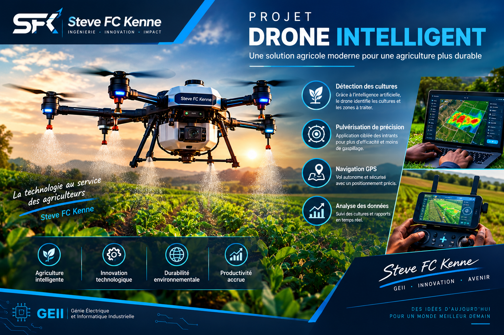

PROJET 02 · ROBOTIQUE & IA
Drone pulvérisateur agricole intelligent
Un système aérien intelligent destiné à assister les activités agricoles grâce à l'électronique embarquée, aux capteurs et à l'intelligence artificielle.

Présentation du projet
Le projet vise à concevoir un drone capable d'intégrer différents systèmes électroniques afin d'assister certaines opérations agricoles.
Le système peut notamment exploiter des capteurs, une unité de traitement embarquée et des mécanismes de commande afin de prendre des décisions en fonction des informations recueillies.
Technologies envisagées
- Système de contrôle embarqué
- Capteurs
- GPS et navigation
- Communication sans fil
- Caméra et vision
- Intelligence artificielle
- Système de pulvérisation
Objectif
Explorer l'utilisation des technologies embarquées et de l'intelligence artificielle pour développer des solutions technologiques adaptées au domaine agricole.